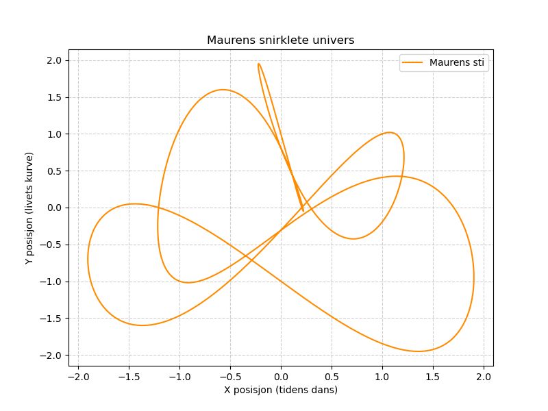

Dagens dikt
Langs en snirklete sti gikk en gammel maur,
som bar på en krumme fra gårsdagens bål.
Hver gang stien krummet og vred seg som et buet tau,
hvisket vinden hemmeligheter som kun naturen forstår.
Maurens spor lagde en bølge som steg og falt,
som en dans i et univers fylt med tidens kraft.
Kurvene og hjørnene viste livets matematiske maling
der hvert punkt var et kjølvann, en skjebnes strekning.

Kode
import numpy as np
import matplotlib.pyplot as plt
# Parametere for "stien"
t = np.linspace(0, 2 * np.pi, 1000) # tidsvariabel, representerer stiens utvikling
# Matematisk representasjon av maurens sti som bølger inspirert av diktet
x = np.sin(2 * t) + np.cos(3 * t) # x-koordinater, snirklete svingninger
y = np.sin(t) + np.cos(5 * t) # y-koordinater, livets kraft
# Lage plot
plt.figure(figsize=(8, 6))
plt.plot(x, y, label="Maurens sti", color="darkorange")
plt.title("Maurens snirklete univers")
plt.xlabel("X posisjon (tidens dans)")
plt.ylabel("Y posisjon (livets kurve)")
plt.legend()
plt.grid(True, linestyle="--", alpha=0.6)
plt.savefig('2025-03-20-20-01-15.png')